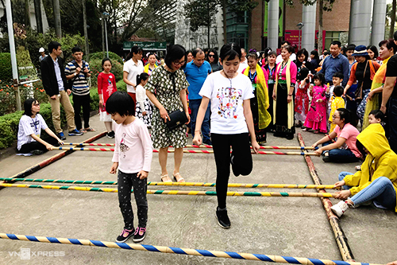
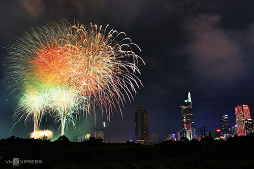

Kỳ nghỉ lễ 30/4 năm nay kéo dài 5 ngày. Dưới đây là những hoạt động sôi nổi tại một số điểm du lịch trên cả nước
Hà NộiTừ ngày 27/4 tới 1/5, Làng Văn hóa - Du lịch các dân tộc Việt Nam (Đồng Mô, Sơn Tây) tổ chức các lễ hội truyền thống và chợ vùng cao với chủ đề "Sắc màu Lai Châu".
Du khách có dịp thưởng thực ẩm thực, đặc sản truyền thống, tìm hiểu văn hóa các dân tộc hoặc thử sức với các trò chơi dân gian. Không gian trao đổi mua bán của đồng bào các dân tộc được tái hiện ở đây.
Cũng trong dịp này, Bảo tàng Dân tộc học Việt Nam (quận Cầu Giấy) miễn vé vào cửa và thuyết minh cho cựu chiến binh, thanh niên xung phong từ ngày 28/4 đến 1/5. Bảo tàng cũng tổ chức các trò chơi dân gian để phục vụ khách tham quan như: nối thúng, nhảy bao bố, ô ăn quan, kéo co, nhảy dây, đẩy gậy
Hải PhòngLiên hoan du lịch với chủ đề "Đồ Sơn - Miền di sản" sẽ diễn ra trong 2 ngày 30/4 và 1/5 tại quảng trường 15/5, khu I Đồ Sơn. Liên hoan có nhiều hoạt động sôi nổi nhằm quảng bá hình ảnh du lịch biển, du lịch tâm linh tại Đồ Sơn đến du khách trong nước và quốc tế.
HuếFestival nghề truyền thống Huế năm 2019 diễn ra từ 26/4 đến 2/5. Năm 2019 là lần thứ 8 sự kiện diễn ra với chủ đề "Tinh hoa nghề Việt".
Ngoài các chương trình được tổ chức thường niên đã trở thành thương hiệu như lễ hội áo dài, lễ tế tổ bách nghệ - lễ rước tôn vinh nghề, lễ hội ẩm thực, lễ hội khinh khí cầu quốc tế Huế, festival lần này có thêm lễ hội hoa, chương trình nghệ thuật. 16 nhóm nghề như thêu, kim hoàn, mộc mỹ nghệ, nón lá, hoa giấy, tranh, pháp lam, nhang trầm, tinh dầu... sẽ được giới thiệu, tôn vinh, quảng bá đến du khách.
Lễ hội năm nay còn có sự tham gia của các doanh nghiệp đến từ Nhật Bản, Hàn Quốc và Trung Quốc
TP HCMTừ 21h đến 21h15 tối 30/4, pháo hoa nghệ thuật tầm cao sẽ phục vụ người dân thành phố tại hai khu vực: đầu đường hầm Thủ Thiêm (hầm sông Sài Gòn, quận 2) và tòa nhà Landmark 81 (quận Bình Thạnh); và một điểm tầm thấp ở Công viên văn hóa Đầm Sen (quận 11).
 Cần ThơDu khách đến Cần Thơ dịp lễ này có thể ghé xem Giải đua xe mô tô toàn quốc, vòng 4 "Cup vô địch quốc gia năm 2019". Giải đua sẽ diễn ra vào lúc 15h ngày 30/4 tại Sân vận động Cần Thơ với sự tham gia tranh tài của 56 tay đua.